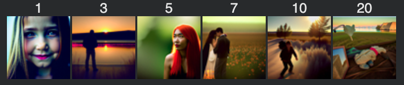

First, I played around with the DeepFloyd diffusion model to generate the embeddings and images for some of my own prompts. The following images and their corresponding text prompts are displayed below.
The random seed I am using during this project is 100. Between 30 and 100 inference steps, there was not a huge difference in some of the images. However, I did notice that the images followed style prompts with better quality. For example, both “watercolor paintings” followed the art style much closer at 100 steps than 30 steps, and the “vintage photograph” follows the “vintage” style closer at 100 steps as well. This makes sense because the more steps the model takes, the higher quality the results will be at the cost of inference speed. It had time to not only follow the basic textual prompt but also nuances such as watercolor and vintage in the prompts.
This part is performing the noising process on the image of the Campanile at various timesteps. As the number of time steps, more and more of the Gaussian noise is introduced into the image, causing increasing amounts of the multicolored blurring effect. To implement this, we sample the noise from a Gaussian with mean sqrt(alpha)*x_0, where alpha is obtained from the alphas_cumprod variable; we use noise derived from torch.randn_like.
Here we attempt to use Gaussian blur filtering to remove the noise we introduced in part 1.1. While the Gaussian blur (implemented using torchvision.transforms.functional.gaussian_blur) does remove the sharp artifacts introduced by the multicolor static in the noising process, we see that it also blurs the image itself. Thus, the blurring works somewhat well at lower timesteps when not too much noise has been introduced and allows the viewer to make out the shape of the Campanile at higher noise levels, but cannot reliably denoise the Campanile very well.
This one-step denoising evidently has much better results than the previous part. Instead of directly trying to remove the noise, one-step denoising uses a UNet to recover Gaussian noise from an image. This UNet was trained on a very large dataset of pairs of images, essentially trying to find the original image that can be noised to find a noisy image similar to ours. As we can see, the denoising process results in a denoised image that is very similar to our original one. While there are small differences in the exact tower in the produced image, we can see that it is very close to the Campanile. We implement this by first using the previously implemented forward function to add noise to the image, then estimating the noise by passing it through stage_1.unet. Then, we undergo the denoising process using the noise estimate before visualizing it.
While part 1.3 produced better results than part 1.2, we notice that detail is lost when denoising the more noisy images. Therefore, instead of only denoising for one step, we can use iterative denoising to estimate the noise at each step. We see that the resulting image is much higher in detail, compared to the Gaussian blur and single-step denoising. To implement this, we create a list called strided_timesteps, which creates a schedule of timesteps decreasing by 30 from timestep 990 to timestep 0. We implement the iterative denoising method, which denoises an image starting at timestep[i_start] and applies the DDPM equations to obtain the image at timestep[i_start + 1], iteratively continuing until we achieve a clean image.
Here we attempt to denoise an image of pure noise with the prompt “a high quality photo.” We see that we have random diverse images of decent but not amazing quality. To implement this, we use the iterative_denoise function we made in the previous part, with i_start=0 and passing in pure noise (created with torch.randn) to start the denoising process at.
To improve the results from the previous part, we use Classifier-Free Guidance, which improves image quality at the price of image diversity. We impose a condition (“a high quality photo”); the new noise estimate will now depend on both the unconditional and conditional noise estimate. In these images, the CFG scale is 7, allowing the prompt to become a condition. We see that as a result, the images are higher quality with more vibrant colors and details.
This is the edited version of the campanile, where the resulting image becomes closer to the original image as i_start increases. This was done by taking the original image, noising it, and denoising it. We see this because when more noise is applied, the model must “hallucinate” new things, as can be seen by how different the leftmost images are from the original. Therefore, this process effectively "edits" the original image.
Once again, we see the edits of my friends’ and my Turkey Trot selfie getting closer and closer to the original image that is on the right. The edits start very far away from the true image and slowly introduce more and more people until it matches the original.
These are edits of my house’s Friendsgiving potluck. Once again, the images go from very unrelated to slowly matching the original shockingly well.
Experimenting with hand-drawn/non-realistic images is very interesting because we can see how they project onto the natural image manifold. Below are examples containing Salvador Dali’s The Persistence of Memory, as well as a hand-drawn flower and Christmas tree. In all of these examples, we can see interesting representations of the final drawings, such as a person in nature for Dali’s painting, a realistic version of the flower I drew, and a person wearing a green skirt for the Christmas tree.
We can also implement inpainting using interesting masks. With a binary mask applied, the new image will have the same content as the original where m is 0 and new content where m is 1. See some examples below!
In this part, we guide projection with a text prompt, adding a layer of guidance to the original process of projecting to the natural image manifold. In my results, I have used the prompt “a vintage photograph of an office building.” The images gradually look more like the original image but start with the image in the text prompt.
To make visual anagrams, we run two denoising processes; one with the image right side up (prompt 1) and the other upside down (prompt 2). To get the anagram, we take the average of the two noise estimates to get the final noise estimate. Note that we are using CFG for all of these parts.
These anagrams performed remarkably well and I thought it was so cool how the images were able to be so evident but also follow their corresponding text prompts so closely.
To generate hybrid images, we estimate the noise with two different text prompts and run the denoising twice. Then, to combine them, we run a lowpass filter to extract the low frequencies of one and a highness filter to extract the high frequencies of the other.
These were very interesting results and made me realize that the prompts that I chose were very important to the hybrid quality. For example, a mountain range and vegetables made a viable hybrid because the colors and shapes were plausible to be mixed. The teddy bear and flower example struggled slightly; I think this was partially because the prompts don’t mesh super well and they are both items that would be at the center of an image. However, I found it interesting how the noise estimates attempted to combine the two.
In these parts, I implemented a single-step denoising UNet, trained the denoiser, and tested it on the MNIST dataset, out-of-distribution noise levels, and pure noise. The UNet consists of downsampling blocks, then upsampling blocks with skip connections. In order to train the denoiser, we generated data pairs of (noisy image, clean image), visualized below.

To train the UNet, I used the recommended noise level of 0.5, batch size of 256, 5 epochs, hidden dimension D=128, L2 MSE loss, and Adam optimizer with learning rate of 1e-4. Below are a visualization of the training loss and denoising results over 1 and 5 epochs.


Here are the denoised samples on varying levels of noise; the differences are subtle, but we can see that the denoiser does not work as well with images that were noised with a factor that was very different from 0.5, which it was trained on. For example, we can see clearly with noise levels 0.8 and 1.0 that there are noisy artifacts in the denoised image.
Next, we attempt to denoise pure, Gaussian noise to simulate a generative task. We observe something interesting about the results.
We get interesting results: the denoised image in both epoch 1 and 5 are very similar and don’t seem to form a number in MNIST. We somewhat see numbers formed such as 3 and 8, but it isn’t clear. This makes sense because our model attempts to minimize MSE loss, which minimizes the sum of squared distances to all training examples. Therefore, it essentially finds the average of all the digits in the MNIST dataset, creating a blurry image that somewhat resembles all the digits in the dataset.
In this part, we will use flow matching to adapt our UNet to generative tasks. We do this by predicting the “flow” from noisy data to clean data with respect to time. The UNet approximates a flow over a dt (time) and trains with a loss between the predicted flow and actual flow. In order to do this, we need to be able to inject time conditioning into the UNet using fully-connected blocks.
To train the UNet, the training loop consists of choosing a random image x1 from the training set, adding noise to this image to get x_t for some random t (done by interpolation), and training the denoiser to predict the flow at this x_t. I used the recommended batch size of 64, hidden dimension D=64, Adam optimizer with initial learning rate of 1e-2 and exponential learning rate decay scheduler, and 10 epochs.


Now, let’s work on making our UNet better by conditioning on the digit 0-9, which the MNIST dataset consists of. Class conditioning is implemented similarly to the time-conditioned UNet, injecting both the time and class signal into the UNet via FCBlocks. Furthermore, we use dropout 10% of the time as in classifier-free guidance (we use strength = 5.0); both the unconditional and conditional flow are used to calculate the final predicted flow that guides the model’s loss and learning.


Then, I removed the exponential learning rate scheduler to keep the model simpler. This still performed very well, but I also decreased the learning rate from 1e-2 to 1e-3 to account for the removed exponential decay. A way to think about this is that exponential decay allows for larger steps at first and smaller steps at the end, so we need to compensate for the fact that 1e-2 may be too large of a learning rate to maintain for the entire training process.